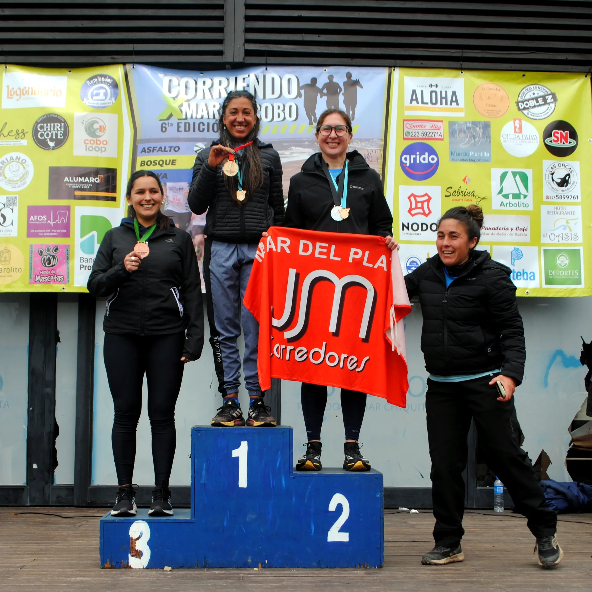
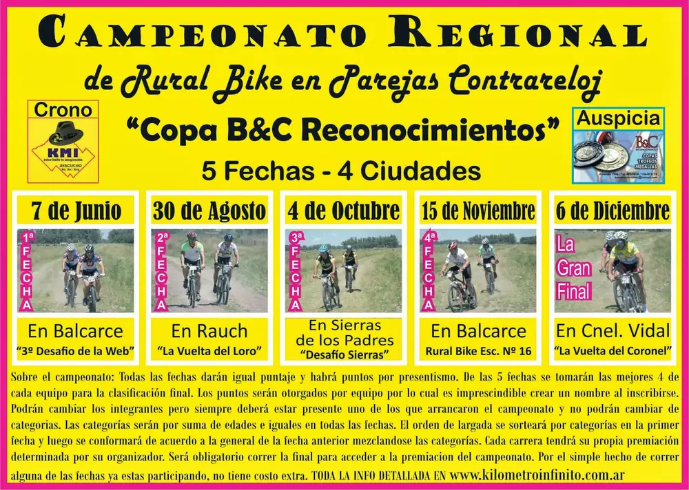

Campeonato Regional de Rural Bike en Parejas Contrarreloj - Inicia 07/06/2015, Finaliza 06/12/2015
17 de junio de 2015
El Campeonato de Parejas Contrarreloj "Copa B&C Reconocimientos ya tuvo su primer fecha el 7 de junio en Balcarce con 122 equipos, la proxima sera el Domingo 30 de Agosto en Rauch con la "Vuelta del Loro"
Para ver toda la info del campeonato Clik Aca
